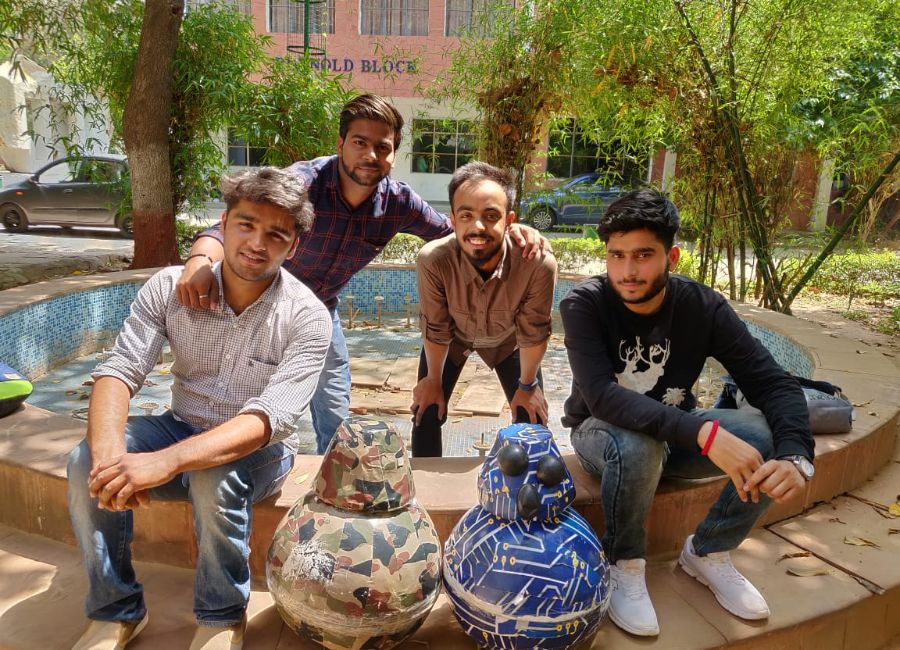
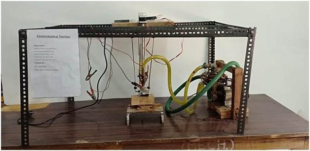
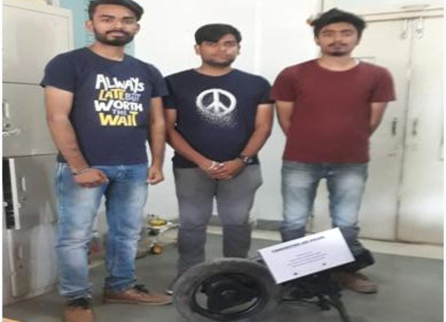

HOLONOMIC BALL ROBOT PROJECT
Robots are rapidly evolving from factory work-horses to robot-companions. The future of robots is highly dependent on their abilities to understand, interpret and represent the environment in an efficient and consistent fashion, in a human compatible manner. The theme of the work is - representation and conceptualization for spatial cognition in mobile robots. The single greatest challenge at the moment for mobile robotics is to endow a robot with the capacity to exhibit a greater degree of spatial awareness.
This project is based on an Astro-mechanical droid that appears on Star Wars Episode - The Force Awakens. It has a ball shaped body and a domed head that resembles that of droids.Ball Robot’s body rolls independently from the head, which always stays near the vertical axis of the droid.

The Developer Team: (From Left) Sagar Masand, Haarish Khan, Pranav Gudhenia, Bhaskar Gupta From EC-2019 Pass Out Batch
The body contains a drive system that always keeps a relative position with respect to the sphere. The system uses wheels to make the sphere roll in any direction. The drive system can be maneuvered using a mobile phone via Bluetooth Connectivity. The base plate acts as a counterweight, keeping the center of gravity close to the ground.
In this Project, we will deliberate about Holonomic Robots and the movement of the robots according to the structure. We will also show that how we can make this robot in a shape of sphere and at the same point of time making it in such a way so that it can move from one place to another. This will give us an advantage because with the help of its spherical shape it can be movable on an any type of surface.
Electrochemical Machining
Students of final year Mechanical Engineering Kuldeep Nimoriya, Abhay Kumar Tiwari, Adarsh Sihare, Arun Kumar and Pushpendra Singh are made a working model of Electro chemical Machine, which works on electrolysis process. It is highly advanced machining process which is used for machining for nano chips , turbine blade etc. it’s machining process very precise and accurate. They also developed a servo control mechanism for its convenient operation and automatic tool feed into the job.
Compressed Air Engine
Students of final year Mechanical Engineering Pranit Indait, Akash sinha, Ashutosh rathore, are made a working model of Compressed air engine by modifying a 4-stroke petrol engine, which works by compressed air. The modified engine is to be tested multiple time with continuous and non continuous air flow. The engine runs only on high pressure compressed air so the exhaust of which is indisputably only air, making it a zero pollution engine. This engine exhaust system only leaves air with considerably less temperature and thus reducing the green house effect and it represents a successful solution to pollution problems.
